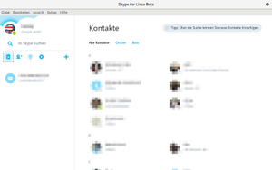
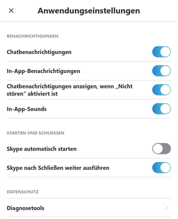

Skype für Linux
Dieser Artikel wurde für die folgenden Ubuntu-Versionen getestet:
Ubuntu 16.04 Xenial Xerus
Zum Verständnis dieses Artikels sind folgende Seiten hilfreich:
Skype für Linux  ist eine unfreie Software von Microsoft zur Videotelefonie auf WebRTC-Basis. Mit Skype ist es möglich, mit den Kontakten zu chatten, Dateien zu senden oder zu empfangen und zu telefonieren, mit oder ohne Video. Alle Daten werden bei Skype verschlüsselt übertragen.
ist eine unfreie Software von Microsoft zur Videotelefonie auf WebRTC-Basis. Mit Skype ist es möglich, mit den Kontakten zu chatten, Dateien zu senden oder zu empfangen und zu telefonieren, mit oder ohne Video. Alle Daten werden bei Skype verschlüsselt übertragen.
Kommunikation zwischen Skype-Kontakten ist kostenlos, Anrufe in oder aus dem Festnetz, sowie das Verschicken von SMS sind hingegen kostenpflichtig. Man sollte acht geben, wenn man Guthaben bei Skype einzahlt, um telefonieren zu können. Denn das Guthaben des Zugangs verfällt, wenn es mehr als 6 Monate nicht genutzt wurde. Das registrierte Nutzerkonto bleibt allerdings weiterhin aktiv.
Skype für Linux basiert auf Skype for Web und ersetzt das eingestellte Skype 4.3. Es ist nur für 64-bit-Systeme verfügbar. Nutzt man ein 32-bit-System, muss man auf Skype for Web ausweichen.

Installation¶
Skype für Linux befindet sich nicht in den offiziellen Paketquellen.
Von Microsoft werden
DEB-Pakete  angeboten.
Die unterstützten Ubuntuversionen und Architekturen werden aufgelistet.
Nachdem man sie für die korrekte Ubuntuversion und Architektur geladen hat, müssen DEB-Pakete noch installiert werden.
angeboten.
Die unterstützten Ubuntuversionen und Architekturen werden aufgelistet.
Nachdem man sie für die korrekte Ubuntuversion und Architektur geladen hat, müssen DEB-Pakete noch installiert werden.
Hinweis!
Fremdpakete können das System gefährden.
Um Aktualisierungen für das Paket skypeforlinux zu erhalten, wird durch die Installation des Fremdpakets automatisch folgende Fremdquelle hinzugefügt:
deb [arch=amd64] https://repo.skype.com/deb stable main
Bedienung¶
Beim ersten Start registriert man sich oder meldet sich mit seinem Skype- oder Microsoft- (früher Hotmail)-Konto an. Die Sprache lässt sich unter "Datei" -> "Profil anzeigen..." -> "Sprache" einstellen. Weitere Einstellungen zum Erscheinungsbild, Benachrichtigungen, dem Chat-Fenster und Datenschutz finden sich unter "Extras" -> "Einstellungen".
Problembehebung¶
Mikrophon- oder Tonprobleme¶
Falls man Probleme mit dem Mikrophon oder der Tonausgabe hat, gibt es möglicherweise ein Problem mit PulseAudio (unter 16.04 beobachtet). Dann kann ein Zurücksetzen der Konfiguration helfen. Pulseaudio und ALSA müssen zur Verwendung installiert sein, was in der Standardinstallation von Ubuntu der Fall ist. Man sollte auch darauf achten, dass Skype die richtige Soundkarte anspricht. Dies kann in den Einstellungen editiert werden.
Der Skype-Indikator wird im Indikator-Feld der Taskleiste nicht angezeigt¶
Einfach Skype mit der Variable "env XDG_CURRENT_DESKTOP=Unity" ausführen:
env XDG_CURRENT_DESKTOP=Unity skypeforlinux
Um diesen Workaround permanent zu machen, kopiert man die Datei /usr/share/applications/skypeforlinux.desktop ins Verzeichnis ~/.local/share/applications/:
cp /usr/share/applications/skypeforlinux.desktop ~/.local/share/applications/
und dann editiert man die Datei ~/.local/share/applications/skypeforlinux.desktop, indem man in der Exec-Zeile env XDG_CURRENT_DESKTOP=Unity unmittelbar nach dem Exec= hinzufügt:
[Desktop Entry] Name=Skype Comment=Skype Internet Telephony Exec=env XDG_CURRENT_DESKTOP=Unity /usr/bin/skypeforlinux %U Icon=skypeforlinux Terminal=false Type=Application StartupNotify=true Encoding=UTF-8 Categories=Network;Application; MimeType=x-scheme-handler/skype; X-KDE-Protocols=skype Actions=QuitSkype; [Desktop Action QuitSkype] Name=Quit Skype Name[en]=Quit Skype Name[de]=Skype beenden Exec=/usr/bin/skypeforlinux --shutdown OnlyShowIn=Unity;
Falls man Skypeforlinux bei der Anmeldung automatisch starten lassen möchte, braucht man dieselbe Änderung in der Autostart-Datei ~/.config/autostart/skypeforlinux.desktop. Das Problem ist aber, dass Skypeforlinux Änderungen an ihrer Autostart-Datei überschreibt. Um dies zu umgehen, kopiert man die Autostart-Datei mit einem anderen Namen um und legt dann in den Anwendungseinstellungen fest, dass Skypeforlinux beim Anmelden nicht gestartet wird. Auf diese Weise wird die geänderte Autostart-Datei verwendet, die einen anderen Namen hat (also von Skypeforlinux nicht mehr gelöscht werden kann) und den Workaround enthält.

So wird es gemacht:
Extras -> Einstellungen -> Skype automatisch starten -> Ja (Default-Einstellung)
Dabei wird eine Autostart-Datei ~/.config/autostart/skypeforlinux.desktop automatisch angelegt.
Die Autostart-Datei umkopieren
cp ~/.config/autostart/skypeforlinux.desktop ~/.config/autostart/skpfrlnx-my.desktop
Die neue Datei ~/.config/autostart/skpfrlnx-my.desktop editieren:
[Desktop Entry] Name=Skype Comment=Skype Internet Telephony Exec=env XDG_CURRENT_DESKTOP=Unity /usr/bin/skypeforlinux Icon=skypeforlinux Terminal=false Type=Application StartupNotify=false X-GNOME-Autostart-enabled=true
Extras -> Einstellungen -> Skype automatisch starten -> nein
Dabei wird die Autostart-Datei ~/.config/autostart/skypeforlinux.desktop gelöscht.
Die neue Datei ~/.config/autostart/skpfrlnx-my.desktop bleibt aber bestehen und wird von Ubuntu für den Autostart verwendet.
Links¶
Skype - Wikipedia
Skype - Der Vorgänger
Ghetto-Skype
 - alternativer Client
- alternativer ClientSkype
- Eine umfangreiche Sammlung von Problemlösungen im Arch-WikiOffener Brief an Skype-Anwender - Deshalbfrei.org
Tox - freie Skype-Alternative
Skype und Alternativen -
EasyLinux, 06/2006Instant Messenger
 Programmübersicht
Programmübersicht
- Erstellt mit Inyoka
-
 2004 – 2017 ubuntuusers.de • Einige Rechte vorbehalten
2004 – 2017 ubuntuusers.de • Einige Rechte vorbehalten
Lizenz • Kontakt • Datenschutz • Impressum • Serverstatus -
Serverhousing gespendet von